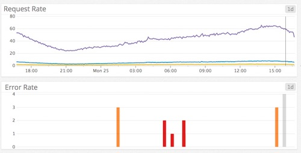
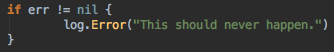
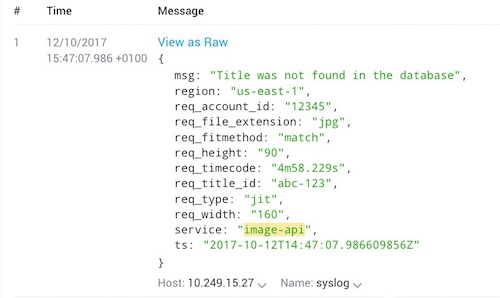

In many ways Go is a clean break from our past programming sins, but it feels as though logging is still an area where people cling on to unnecessary practices from other languages.
After realising the logging we were generating from a recent project was unusable (tens of lines per request, many of which either dumped out entire structs or had no usable information), I implemented the following steps.
They've "Worked For Me"™ in a microservice-based architecture serving tens of thousands of computationally-intense requests per second.
1. Your Happy Path is a Metric
The 'Happy' path through your webapp (2xx response) shouldn't have any logging on it. The only things you care about here are how often it was hit and how long it took to serve a response.
2. Throw away Levels
When was the last time you ran Production at anything other than Info? Is changing the level a quick process that everyone on the team knows how to do?
Despite this, scrapping levels is always the step that people are most uncomfortable with.
In reality, this is how levels are used:
- INFO - This might be useful someday
- WARN - I don't want to think about error handling
- DEBUG - I don't want to think about logging
- ERROR - Something may or may not have gone wrong
But the only reason you're looking at logs in the first place is because something's gone wrong. AKA an error. And so:
Because we're writing webapps, the definition of "something's gone wrong" is "we're returning an HTTP error code". For everything else (e.g retrying failed calls to external APIs), put metrics around it.
3. Log at the edge of your system
Your logging code should live in one place at the edge of your webapp, ideally as a middleware that kicks in just before an error response is returned to the user. You're now free from bloating up your method signatures / structs with loggers.
This also ties in perfectly with Go's pattern of passing errors up the call stack until something can handle it.
4. Log with context
Now that you're logging in a single place, it's easy to make sure that your log lines include some context to help you reproduce errors. This means no more tears and recrimination when you hit this in Production:
As a minimum, I go for:
- Timestamp
- Microservice Name
- URL requested
- Information about exactly where in The Cloud the request hit
- Some way of identifying the user
- Any relevant HTTP headers / body
If you're doing structured logging (and if you're not, why not?) this context will also be useful for quickly tracking down bad subnets/resources/users.
5. Link log lines across services
Generate a unique request ID in any user-facing services and then pass that around internally. This will let you correlate log lines - e.g:
- Service A logs that it got a 500 from internal service B on Request ID abc-123
- Service B logs that Amazon S3 was unreachable on Request ID abc-123
Discuss
I'd be really interested in people's thoughts on this (especially around cases it wouldn't work for) via the Hacker News post